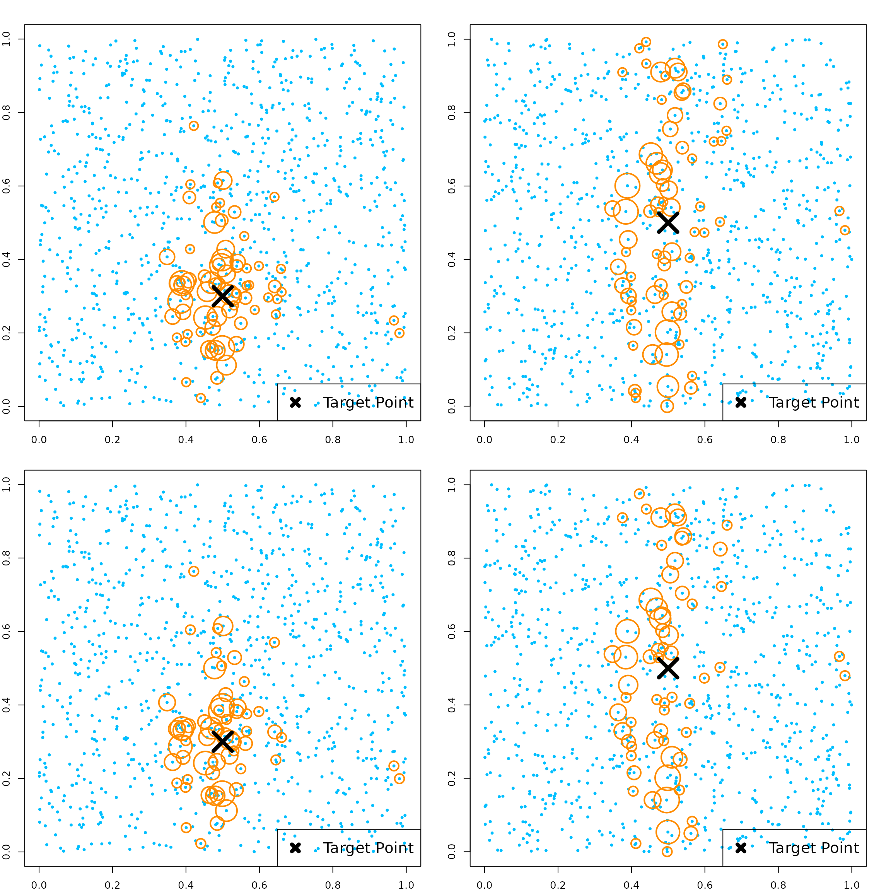

RLT Package Testing Regression Functions and Features
Ruoqing Zhu
Last Updated: July 17, 2025
Test-Reg.RmdInstall and Load Package
Install and load the GitHub version of the RLT package. Do not use the CRAN version.
# install.packages("devtools")
# devtools::install_github("teazrq/RLT")
library(RLT)
## RLT and Random Forests v4.2.6
## pre-release at github.com/teazrq/RLTLoad other packages used in this guide.
Benchmark Against Existing Packages
We generate a dataset with 1000 observations and 400 variables, with 200 continuous variables and 200 categorical ones with three categories.
library(parallel)
# Set seed for reproducibility
set.seed(1)
# Define data size
trainn <- 800
testn <- 1000
n <- trainn + testn
p <- 30
# Generate continuous variables (X1) and categorical variables (X2)
X1 <- matrix(rnorm(n * p / 2), n, p / 2)
X2 <- matrix(as.integer(runif(n * p / 2) * 3), n, p / 2)
# Combine continuous and categorical variables into a data frame (X)
X <- data.frame(X1, X2)
# Convert the second half of the columns in X to factors
X[, (p / 2 + 1):p] <- lapply(X[, (p / 2 + 1):p], as.factor)
# Generate outcomes (y)
y <- 1 + rowSums(X[, 2:6]) + 2 * (X[, p / 2 + 1] %in% c(1, 3)) + rnorm(n)
# Set tuning parameters
ntrees <- 1000
ncores <- detectCores() - 1
nmin <- 30
mtry <- p / 2
samplereplace <- TRUE
sampleprob <- 0.80
rule <- "best"
nsplit <- ifelse(rule == "best", 0, 3)
importance <- TRUE
# Split data into training and testing sets
trainX <- X[1:trainn, ]
trainY <- y[1:trainn]
testX <- X[(trainn + 1):(trainn + testn), ]
testY <- y[(trainn + 1):(trainn + testn)]
# recording results
metric = data.frame(matrix(NA, 4, 6))
rownames(metric) = c("RLT", "randomForestSRC", "randomForest", "ranger")
colnames(metric) = c("fit.time", "pred.time", "oob.error", "pred.error",
"obj.size", "tree.size")
# using RLT package
start_time <- Sys.time()
RLTfit <- RLT(trainX, trainY, model = "regression",
ntrees = ntrees, mtry = mtry, nmin = nmin,
resample.prob = sampleprob, split.gen = rule,
resample.replace = samplereplace,
nsplit = nsplit, importance = importance,
param.control = list("alpha" = 0),
ncores = ncores, verbose = TRUE)
## Regression Random Forest ...
## ---------- Parameters Summary ----------
## (N, P) = (800, 30)
## # of trees = 1000
## (mtry, nmin) = (15, 30)
## split generate = Best
## sampling = 0.8 w/ replace
## (Obs, Var) weights = (No, No)
## importance = permute
## reinforcement = No
## ----------------------------------------
metric[1, 1] = difftime(Sys.time(), start_time, units = "secs")
start_time <- Sys.time()
RLTPred <- predict(RLTfit, testX, ncores = ncores)
metric[1, 2] = difftime(Sys.time(), start_time, units = "secs")
metric[1, 3] = mean((RLTfit$Prediction - trainY)^2)
metric[1, 4] = mean((RLTPred$Prediction - testY)^2)
metric[1, 5] = object.size(RLTfit)
metric[1, 6] = mean(unlist(lapply(RLTfit$FittedForest$SplitVar, length)))
# use randomForestSRC
options(rf.cores = ncores)
start_time <- Sys.time()
rsffit <- rfsrc(y ~ ., data = data.frame(trainX, "y"= trainY),
ntree = ntrees, nodesize = nmin/2, mtry = mtry,
samptype = ifelse(samplereplace == TRUE, "swor", "swr"),
nsplit = nsplit, sampsize = trainn*sampleprob,
importance = ifelse(importance, "permute", "none"))
metric[2, 1] = difftime(Sys.time(), start_time, units = "secs")
start_time <- Sys.time()
rsfpred = predict(rsffit, data.frame(testX))
metric[2, 2] = difftime(Sys.time(), start_time, units = "secs")
metric[2, 3] = mean((rsffit$predicted.oob - trainY)^2)
metric[2, 4] = mean((rsfpred$predicted - testY)^2)
metric[2, 5] = object.size(rsffit)
metric[2, 6] = rsffit$forest$totalNodeCount / rsffit$ntree
# use randomForest
start_time <- Sys.time()
rf.fit <- randomForest(trainX, trainY, ntree = ntrees,
mtry = mtry, nodesize = nmin,
replace = samplereplace,
sampsize = trainn*sampleprob,
importance = importance)
metric[3, 1] = difftime(Sys.time(), start_time, units = "secs")
start_time <- Sys.time()
rf.pred <- predict(rf.fit, testX)
metric[3, 2] = difftime(Sys.time(), start_time, units = "secs")
metric[3, 3] = mean((rf.fit$predicted - trainY)^2)
metric[3, 4] = mean((rf.pred - testY)^2)
metric[3, 5] = object.size(rf.fit)
metric[3, 6] = mean(colSums(rf.fit$forest$nodestatus != 0))
# use ranger
start_time <- Sys.time()
rangerfit <- ranger(trainY ~ ., data = data.frame(trainX),
num.trees = ntrees, min.node.size = nmin,
mtry = mtry, num.threads = ncores,
replace = samplereplace,
sample.fraction = sampleprob,
importance = "permutation",
respect.unordered.factors = "partition")
metric[4, 1] = difftime(Sys.time(), start_time, units = "secs")
start_time <- Sys.time()
rangerpred = predict(rangerfit, data.frame(testX))
metric[4, 2] = difftime(Sys.time(), start_time, units = "secs")
metric[4, 3] = mean((rangerfit$predictions - trainY)^2)
metric[4, 4] = mean((rangerpred$predictions - testY)^2)
metric[4, 5] = object.size(rangerfit)
metric[4, 6] = mean(unlist(lapply(rangerfit$forest$split.varIDs, length)))
# performance summary
metric
## fit.time pred.time oob.error pred.error obj.size tree.size
## RLT 0.7899787 0.04829931 2.326833 2.348519 4855800 79.080
## randomForestSRC 2.3519471 0.15868258 2.329721 2.417986 13419416 81.296
## randomForest 3.5314641 0.05414748 2.327304 2.372427 3212440 79.312
## ranger 1.3993149 0.07059932 2.318683 2.358706 2842856 79.352Print a Single Tree
You can use the get.one.tree() function to peek into a
single tree.
get.one.tree(RLTfit, 1)
## Tree #1 in the fitted regression forest:
## SplitVar SplitValue LeftNode RightNode NodeWeight NodeAve
## 1 X2 0.5130879 2 3 640 0.00000000
## 2 X5 0.1245613 4 5 461 0.00000000
## 3 X4 0.1278372 68 69 179 0.00000000
## 4 X6 -0.9315267 6 7 270 0.00000000
## 5 X3 -0.3566060 36 37 191 0.00000000
## 6 X3 -0.6818253 8 9 52 0.00000000
## 7 X2 -1.1202194 12 13 218 0.00000000
## 8 <NA> NA NA NA 20 -4.05831582
## 9 X13 0.6969620 10 11 32 0.00000000
## 10 <NA> NA NA NA 25 -1.56610269
## 11 <NA> NA NA NA 7 0.33467263
## 12 X11 0.8086734 14 15 49 0.00000000
## 13 X5 -1.9740546 18 19 169 0.00000000
## 14 X4 -1.2378102 16 17 32 0.00000000
## 15 <NA> NA NA NA 17 0.83807065
## 16 <NA> NA NA NA 4 -5.07730369
## 17 <NA> NA NA NA 28 -1.16601538
## 18 <NA> NA NA NA 15 -1.75654440
## 19 X1.1 (F) 4.0000000 20 21 154 0.00000000
## 20 X6 0.2068412 22 23 94 0.00000000
## 21 X5 -0.8397821 30 31 60 0.00000000
## 22 X3 -0.2591860 24 25 54 0.00000000
## 23 X7 -0.9688096 28 29 40 0.00000000
## 24 <NA> NA NA NA 17 -1.33291805
## 25 X14.1 (F) 4.0000000 26 27 37 0.00000000
## 26 <NA> NA NA NA 18 -0.43713880
## 27 <NA> NA NA NA 19 0.94011843
## 28 <NA> NA NA NA 17 2.53305108
## 29 <NA> NA NA NA 23 0.66413456
## 30 <NA> NA NA NA 22 0.85873903
## 31 X12 -1.8288810 32 33 38 0.00000000
## 32 <NA> NA NA NA 3 4.32370542
## 33 X13 0.7978382 34 35 35 0.00000000
## 34 <NA> NA NA NA 26 2.58142104
## 35 <NA> NA NA NA 9 1.49224825
## 36 X3 -2.0974592 38 39 70 0.00000000
## 37 X4 -0.1241238 52 53 121 0.00000000
## 38 <NA> NA NA NA 4 -2.32649240
## 39 X6 -0.7842442 40 41 66 0.00000000
## 40 <NA> NA NA NA 9 -1.03000167
## 41 X6 -0.7207343 42 43 57 0.00000000
## 42 <NA> NA NA NA 3 4.06230418
## 43 X12 -0.3962172 44 45 54 0.00000000
## 44 <NA> NA NA NA 13 2.51658857
## 45 X3 -0.4572172 46 47 41 0.00000000
## 46 X4 0.4462492 48 49 39 0.00000000
## 47 <NA> NA NA NA 2 3.21089666
## 48 X13 -0.9595361 50 51 32 0.00000000
## 49 <NA> NA NA NA 7 1.74014623
## 50 <NA> NA NA NA 4 2.01719301
## 51 <NA> NA NA NA 28 0.43829619
## 52 X3 1.5642136 54 55 65 0.00000000
## 53 X6 -1.1783072 64 65 56 0.00000000
## 54 X9 -1.2829842 56 57 59 0.00000000
## 55 <NA> NA NA NA 6 4.35667510
## 56 <NA> NA NA NA 6 -0.81379470
## 57 X5 2.4673092 58 59 53 0.00000000
## 58 X4 -0.4766599 60 61 52 0.00000000
## 59 <NA> NA NA NA 1 6.50481360
## 60 X14 -1.0536246 62 63 35 0.00000000
## 61 <NA> NA NA NA 17 2.30415578
## 62 <NA> NA NA NA 6 2.05429613
## 63 <NA> NA NA NA 29 0.80208708
## 64 <NA> NA NA NA 6 1.02489544
## 65 X3 0.3655888 66 67 50 0.00000000
## 66 <NA> NA NA NA 23 3.17356164
## 67 <NA> NA NA NA 27 5.19880987
## 68 X1.1 (F) 4.0000000 70 71 104 0.00000000
## 69 X15 1.6156622 84 85 75 0.00000000
## 70 X4 -2.5436361 72 73 71 0.00000000
## 71 X3 -0.1189881 82 83 33 0.00000000
## 72 <NA> NA NA NA 1 -5.09138993
## 73 X3 0.4572242 74 75 70 0.00000000
## 74 X10 -1.4332881 76 77 50 0.00000000
## 75 <NA> NA NA NA 20 2.67380588
## 76 <NA> NA NA NA 6 -0.77604144
## 77 X14 1.7117741 78 79 44 0.00000000
## 78 X14 0.7914825 80 81 39 0.00000000
## 79 <NA> NA NA NA 5 3.02254894
## 80 <NA> NA NA NA 29 1.56733301
## 81 <NA> NA NA NA 10 0.07304804
## 82 <NA> NA NA NA 12 2.58827777
## 83 <NA> NA NA NA 21 4.89771881
## 84 X6 0.6855359 86 87 73 0.00000000
## 85 <NA> NA NA NA 2 0.41755174
## 86 X7 0.9193260 88 89 54 0.00000000
## 87 <NA> NA NA NA 19 6.38522344
## 88 X5 0.7407007 90 91 42 0.00000000
## 89 <NA> NA NA NA 12 6.16322549
## 90 <NA> NA NA NA 30 3.36388822
## 91 <NA> NA NA NA 12 5.19780288Random Forest Kernel
Let’s generate a new dataset with 5 continuous variables. The true model depends on just the first two variables.
# generate data
n = 1000; p = 5
X = matrix(runif(n*p), n, p)
y = X[, 1] + X[, 2] + rnorm(n)
# fit model
RLTfit <- RLT(X, y, model = "regression",
ntrees = 50, nmin = 4, mtry = 5,
split.gen = "best", resample.prob = 0.8,
resample.replace = FALSE,
importance = TRUE, param.control = list("resample.track" = TRUE))
par(mfrow=c(2, 2))
# target point
newX = matrix(c(0.5, 0.3, 0.5, 0.5, 0.5),
1, 5)
# get kernel weights defined by the kernel function
KernelW = forest.kernel(RLTfit, X1 = newX, X2 = X)$Kernel
par(mar = c(2, 2, 2, 2))
plot(X[, 1], X[, 2], col = "deepskyblue", pch = 19, cex = 0.5)
points(X[, 1], X[, 2], col = "darkorange", cex = 10*sqrt(KernelW/sqrt(sum(KernelW^2))), lwd = 2)
points(newX[1], newX[2], col = "black", pch = 4, cex = 4, lwd = 5)
legend("bottomright", "Target Point", pch = 4, col = "black",
lwd = 5, lty = NA, cex = 1.5)
# check against X3
plot(X[, 1], X[, 3], col = "deepskyblue", pch = 19, cex = 0.5)
points(X[, 1], X[, 3], col = "darkorange", cex = 10*sqrt(KernelW/sqrt(sum(KernelW^2))), lwd = 2)
points(newX[1], newX[3], col = "black", pch = 4, cex = 4, lwd = 5)
legend("bottomright", "Target Point", pch = 4, col = "black",
lwd = 5, lty = NA, cex = 1.5)
# get kernel weights in the original forest
# this is slightly different since the original samples may or may not appear in each tree
KernelW = forest.kernel(RLTfit, X1 = newX, X2 = X, vs.train = TRUE)$Kernel
par(mar = c(2, 2, 2, 2))
plot(X[, 1], X[, 2], col = "deepskyblue", pch = 19, cex = 0.5)
points(X[, 1], X[, 2], col = "darkorange", cex = 10*sqrt(KernelW/sqrt(sum(KernelW^2))), lwd = 2)
points(newX[1], newX[2], col = "black", pch = 4, cex = 4, lwd = 5)
legend("bottomright", "Target Point", pch = 4, col = "black",
lwd = 5, lty = NA, cex = 1.5)
# check against X3
plot(X[, 1], X[, 3], col = "deepskyblue", pch = 19, cex = 0.5)
points(X[, 1], X[, 3], col = "darkorange", cex = 10*sqrt(KernelW/sqrt(sum(KernelW^2))), lwd = 2)
points(newX[1], newX[3], col = "black", pch = 4, cex = 4, lwd = 5)
legend("bottomright", "Target Point", pch = 4, col = "black",
lwd = 5, lty = NA, cex = 1.5)
Setting random seed
## Fitting a forest
RLTfit1 <- RLT(trainX, trainY, model = "regression",
ntrees = 100, importance = TRUE, nmin = 1)
RLTfit2 <- RLT(trainX, trainY, model = "regression",
ntrees = 100, importance = TRUE, nmin = 1,
seed = RLTfit1$parameters$seed)
# check if importance are identical
all(RLTfit1$VarImp == RLTfit2$VarImp)
## [1] TRUE
# prediction
RLTPred1 <- predict(RLTfit1, testX, keep.all = TRUE)
RLTPred2 <- predict(RLTfit2, testX, keep.all = TRUE)
# check predictions are identical
all(RLTPred1$Prediction == RLTPred2$Prediction)
## [1] TRUE